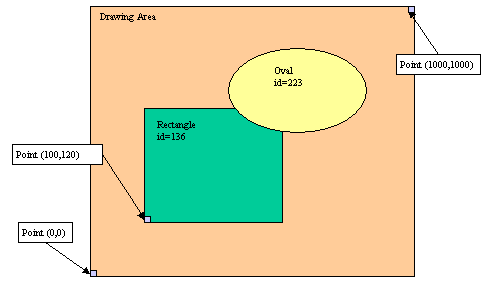

This page describes the usage of Canvas.
By using Canvas, you can draw simple shapes in a specific area of a form. Canvas can draw lines, rectangles, ovals, circles, texts, arcs, and polygons. Keys can be bound to graphical elements for selection with a right or left mouse click.
In programs, you select a given Canvas area by name and you create the shapes in the Abstract User Interface tree by using the built-in DOM API.
The painted canvas is automatically displayed on the front end when an interactive instruction is executed (like MENU or INPUT).
The canvas area represents an abstract drawing page where you define size and location of shapes with coordinates from (0,0) to (1000,1000). The origin point (0,0), is on the left-bottom of the drawing area.

Each canvas element is identified by a unique number (id). You can use this identifier to bind mouse clicks to canvas elements.
Use Canvas to draw simple shapes in a specific area of a form.
<Canvas colName="name" >
{ <CanvasArc canvasitem-attribute="value" [...] />
| <CanvasCircle canvasitem-attribute="value"
[...] />
| <CanvasLine canvasitem-attribute="value"
[...] />
| <CanvasOval canvasitem-attribute="value"
[...] />
| <CanvasPolygon canvasitem-attribute="value"
[...] />
| <CanvasRectangle canvasitem-attribute="value"
[...] />
| <CanvasText canvasitem-attribute="value"
[...] />
} [...]
</Canvas>
[...]
The following table describes all the types of canvas element that are supported:
| Name | Description |
| CanvasArc | Arc defined by the bounding square top left point, a diameter, a start angle, a end angle, and a fill color. |
| CanvasCircle | Circle defined by the bounding square top left point, a diameter, and a fill color. |
| CanvasLine | Line defined by a start point, an end point, a width, and a fill color. |
| CanvasOval | Oval defined by rectangle (with start point and end point), and a fill color. |
| CanvasPolygon | Polygon defined by a list of points, and a fill color. |
| CanvasRectangle | Rectangle defined by a start point, an end point, and a fill color. |
| CanvasText | Text defined by a start point, an anchor hint, the text, and a fill color. |
The following table describes the attributes of canvas elements:
| Name | Values | Description |
| startX | INTEGER (0->1000) | X position of starting point. |
| startY | INTEGER (0->1000) | Y position of starting point. |
| endX | INTEGER (0->1000) | X position of ending point. |
| endY | INTEGER (0->1000) | Y position of ending point. |
| xyList | STRING | Space-separated list of Y X coordinates. For example:
"23 45 56 78".
Warning! For historical and compatibility reasons, the xyList is actually a list of (Y,X) coordinates. |
| width | INTEGER | Width of the shape. |
| height | INTEGER | Height of the shape. |
| diameter | INTEGER | Diameter for circles and arcs. |
| startDegrees | INTEGER | Beginning of the angular range occupied by an arc. |
| extentDegrees | INTEGER | Size of the angular range occupied by an arc. |
| text | STRING | The text to draw. |
| anchor | "n","e","w","s" | Anchor hint to give the draw direction for texts. |
| fillColor | STRING | Name of the color to be used for the element. |
| acceleratorKey1 | STRING | Name of the key associated to a left button click. |
| acceleratorKey3 | STRING | Name of the key associated to a right button click. |
First, you must define a drawing area in the form file. The drawing area is defined by a form field declared with the attribute WIDGET="CANVAS". In the following example, the name of the canvas field is 'canvas01'. This field name identifies the drawing area:
01DATABASE FORMONLY02LAYOUT03GRID04{05Canvas example:06[ca01 ]07[ ]08[ ]09[ ]10[ ]11[ ]12}13END14END15ATTRIBUTES16CANVAS ca01 : canvas01;17END
In programs, you draw canvas shapes by creating Canvas nodes in the Abstract User Interface tree with the DOM API utilities.
Define a variable to hold the DOM node of the canvas and a second to handle children created for shapes:
01 DEFINE c, s om.DomNodeDefine a window object variable; open a window with the form containing the canvas area; get the current window object, and then get the canvas DOM node:
01DEFINE w ui.Window02OPEN WINDOW w1 WITH FORM "form1"03LET w = ui.Window.getCurrent()04LET c = w.findNode("Canvas","canvas01")
Create a child node with a specific type defining the shape:
01 LET s = c.createChild("CanvasRectangle")Set attributes to complete the shape definition:
01CALL s.setAttribute( "fillColor", "red" )02CALL s.setAttribute( "startX", 10 )03CALL s.setAttribute( "startY", 20 )04CALL s.setAttribute( "endX", 100 )05CALL s.setAttribute( "endY", 150 )
It is possible to bind keys / actions to Canvas items in order
to let the end user select elements with a mouse click. You can assign a
function key for left-button mouse clicks with the acceleratorKey1 attribute,
while acceleratorKey2 is used to detect right-button mouse clicks.
The function keys you can bind are F1 to F255. If the user
clicks on a Canvas item bound to key actions, the corresponding action handler
will be executed in the current dialog. Several canvas items can be bound to the
same action keys; In order to identify what items have been selected by a mouse
click, you can use the drawGetClickedItemId() function of fgldraw.4gl. This method will return the AUI tree node id of the Canvas items that
was selected (i.e. s.getId()).
01... Create the Canvas item with s node variable ...02CALL s.setAttribute( "acceleratorKey1", "F50" )03MENU "test"04COMMAND KEY (F50)05IF drawGetClickedItemId() = s.getId() THEN06...07END IF08...09END MENU
To clear a given shape in the canvas, remove the element in the canvas node:
01 CALL c.removeChild(s)To clear the drawing area completely, remove all children of the canvas node:
01LET s=c.getFirstChild()02WHILE s IS NOT NULL03CALL c.removeChild(s)04LET s=c.getFirstChild()05END WHILE
The following table describes the built-in functions provided for backward compatibility with version 3. This list is provided to let you search for existing code using these functions. You are free to use these old functions or use the technique described in the sections above. For more details about the functions listed below, see the FGLDIR/src/fgldraw.4gl source code.
| Name | Description |
| drawInit() | Initializes the drawing API. It is mandatory to call this function at the beginning of your program, before the first display instruction. |
| drawSelect() | Selects a canvas area for drawing. |
| drawDisableColorLines() | By default shapes are paint with borders. This function enables/disables border drawing. |
| drawLineWidth() | Defines the width of lines. |
| drawAnchor() | Defines the anchor hint for texts. |
| drawLine() | Draws a line in the selected canvas. |
| drawCircle() | Draws a circle in the selected canvas. |
| drawArc() | Draws an arc in the selected canvas. |
| drawRectangle() | Draws a rectangle in the selected canvas. |
| drawOval() | Draws an oval in the selected canvas. |
| drawText() | Draws a text in the selected canvas. |
| drawPolygon() | Draws a polygon in the selected canvas. |
| drawClear() | Clears the selected canvas. |
| drawButtonLeft() | Enables left mouse click on a canvas element. |
| drawButtonRight() | Enables right mouse click on a canvas element. |
| drawClearButton() | Disables all mouse clicks on a canvas element. |
| drawGetClickedItemId() | Returns the id of the last clicked canvas element |